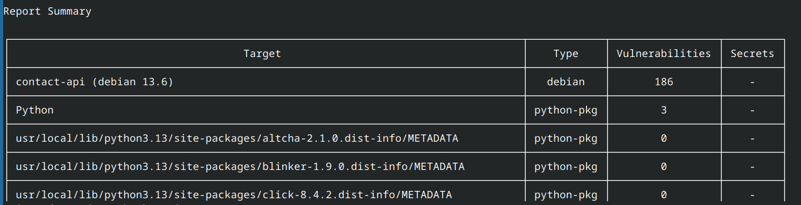
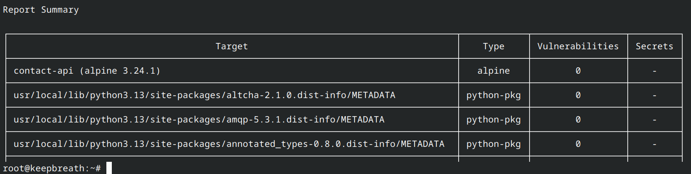
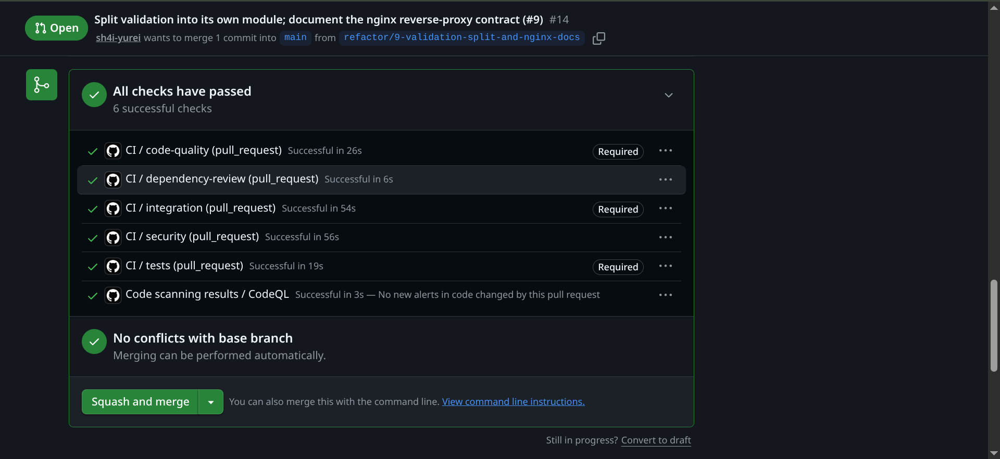
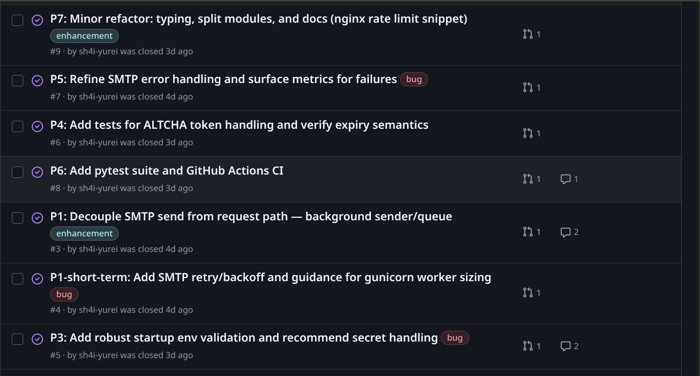
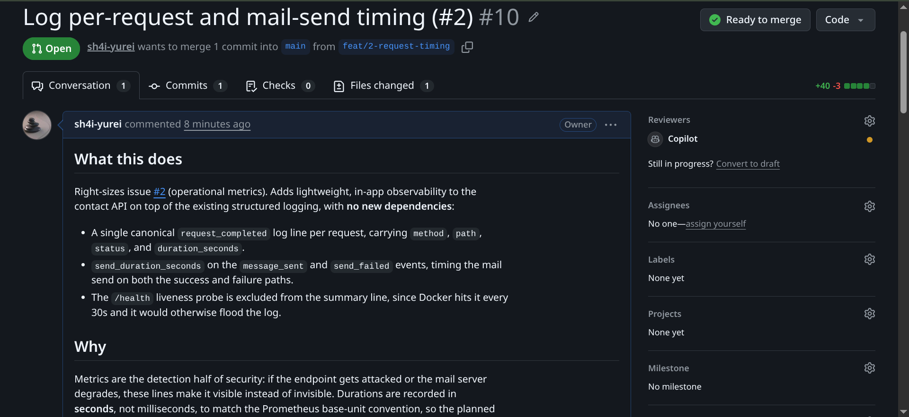
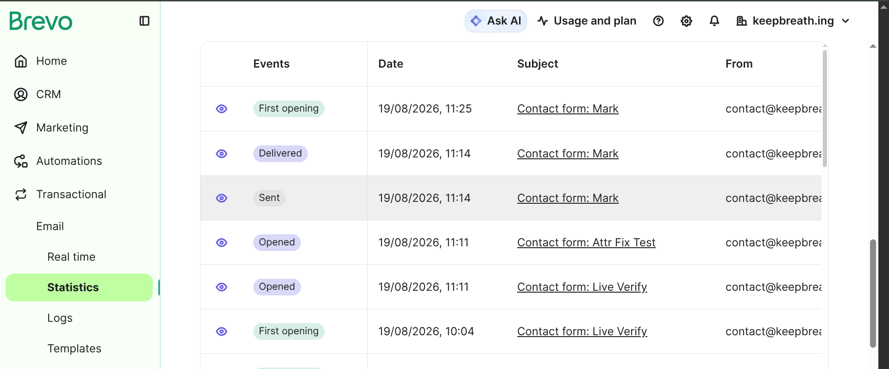
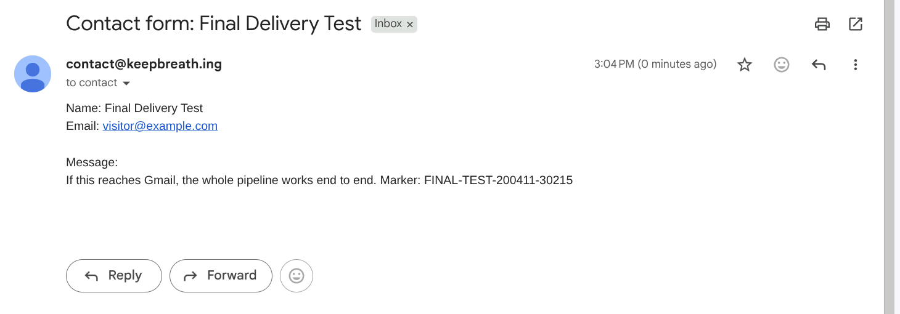
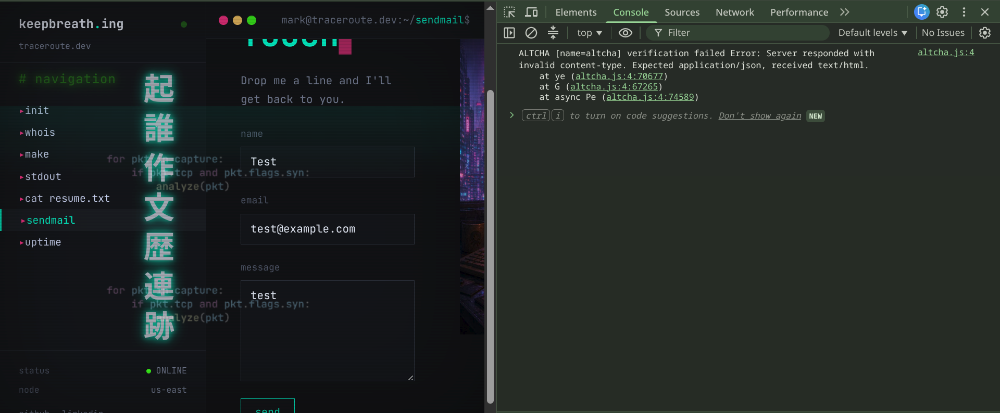
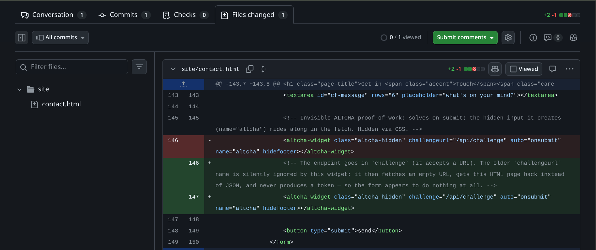
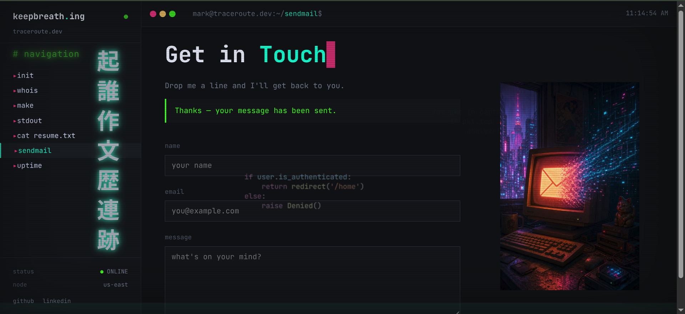

# Wiring up the contact form, and everything hiding underneath
The website was the capstone project for my web programming class. At the time, the contact form was mostly a placeholder: it looked like a working form, but it was static HTML, and clicking Send did nothing. I knew I wanted to come back and make it real once I had more time.
I thought this would be a quick follow-up project. Build a Flask endpoint, take the form submission, send an email to myself, and finally bring the last unfinished piece of the site online.
It did not stay that simple. A public contact form is not just a message box with an email address attached. It is an internet-facing endpoint that has to handle malicious input, spam bots, rate limits, browser security rules, message queues, delivery failures, SMTP restrictions, and the trust checks that decide whether a receiving mail provider accepts a message or throws it away.
The finished version has validation, bot protection, nginx rate limiting, a Redis queue, a Celery worker, retry and recovery logic, container hardening, CI checks, and an authenticated relay for outbound mail. It took about a week and a half of evenings and a long weekend to get there.
Fall semester started in the middle of the work, so most of it happened during downtime at work or late at night after schoolwork. I had just come off my last programming class and was rusty enough that I had to look up how to write a Python dictionary on the first evening.
In the last post, I set up contact@keepbreath.ing as a two-way mail identity, with Gmail as the inbox behind it. That was the mail plumbing. This post is about connecting that plumbing to the form: taking it from a placeholder on a capstone project to a public-facing service that can accept a real submission and get it safely into my inbox.
The endpoint and its validation
The route is POST /api/contact. It takes three JSON fields (name, email, and message), validates them, runs the bot-defence checks, hands the message off to the mail path, and returns a small JSON response.
The validation itself is a straightforward function. It loops the three fields, rejects anything that isn't a string, strips whitespace, enforces length limits, and returns either the cleaned payload or a specific reason for the rejection. Two pieces inside it do the security work.
The email check is the first. My starting plan for it was a short regex, something like \S+@\S+\.\S+, and moving on with my day. Then I read the actual RFC 5322 grammar for an address, which runs to more than 6000 characters. Any short pattern either lets garbage through or rejects addresses that are actually valid. So I dropped the regex and used the maintained email-validator library instead. It runs the syntax check, enforces proper length caps, rejects domains without a dot, and hands back a normalized address. I turned off its DNS-deliverability check to keep requests fast, and stored whatever normalized form the library gave back.
The other is a check for carriage-return and newline characters in the name field. The name lands in the email's Subject header, and email headers are separated by newlines. A name containing a newline can inject a second header, and a hidden Bcc: line on that second header would turn one form submission into a spam blast. Python's EmailMessage has built-in protection against this, but the Python bug tracker has documented cases where it can be bypassed at the edges. So I reject \r and \n in the name field before any of that code even runs. Belt and suspenders.
Bot defence
Bot defence ended up being three layers, but the starting plan was one. A honeypot is a hidden form field a human never fills in because they never see it. A naive bot that just POSTs every field it finds will fill it in every time, and the API drops those submissions on the floor. About ten lines of code total. Then I read what bots actually do now, and realized a bare honeypot catches only the dumbest of them. It's the cheapest layer to build and the least sufficient on its own.
So mine has two more layers behind it: a cryptographic challenge, and a rate limit on the reverse proxy. Each catches a different kind of traffic, and any one alone is weaker than the three combined.
The middle layer took more thought. I looked at Cloudflare Turnstile first. It is free, privacy-friendly, and I was already using Cloudflare. For a site that only needed a CAPTCHA, it probably would have been the fastest answer.
This website is also where I learn by building. I wanted to understand what sits behind a public form: how a challenge is issued and verified, how the browser and API fit together, what the CSP allows, and where the abuse controls actually live. Dropping in a managed CAPTCHA would have solved the immediate problem, but it would have hidden most of the system I was trying to learn.
Turnstile would also have required adding Cloudflare's challenge domain to the site's Content-Security-Policy for its scripts and frames. I picked ALTCHA instead: an open-source proof-of-work CAPTCHA I could serve from my own domain, inspect in the browser, and connect directly to my own API.
The server hands the browser a small cryptographic puzzle at page-load, and the browser burns about a second of throwaway CPU solving it. The answer rides along with the form submission. A real visitor never notices the second. A spammer trying to hit the form thousands of times per second suddenly needs the CPU to do that arithmetic thousands of times per second, and the math makes it uneconomic. The CAPTCHA is invisible, and no human is ever asked to identify buses.
Because ALTCHA is self-hosted from my own domain, the Content-Security-Policy stays strict. I first picked ALTCHA's strict "external" build, thinking it would keep the CSP totally untouched. Then I read further and found that build needs a JavaScript bundler. Webpack, Vite, one of those. My site is hand-coded HTML with no build toolchain, and bolting webpack onto it to dodge a single CSP directive wasn't a good trade. I switched to the single self-hosted bundle and added one line to the policy: worker-src 'self' blob:. That lets my own JavaScript run inside a Web Worker, which is what does the puzzle-solving in the background, without opening the door to anything else.
I turned up a real CVE in the ALTCHA library while researching this: CVE-2025-68113, a challenge-splicing and replay flaw fixed in a recent version. I pinned to the fixed version. The attack pattern behind that CVE (an attacker solving one challenge and reusing the token for a burst of submissions) is also why the code keeps a single-use registry. Every accepted challenge is recorded in a small SQLite database with a UNIQUE constraint. Two workers can't accidentally both accept the same replayed token, because the second write fails.
The third layer, the rate limit, lives out in nginx and caps requests per client at five per minute with a burst of three. Client identity is keyed on Cloudflare's CF-Connecting-IP header, since all traffic reaches the origin through Cloudflare and $remote_addr would otherwise be a Cloudflare edge IP shared across every visitor.
Container hardening
With the app running locally, I put it in a container. The plan for this site is a set of services on separate droplets talking over a shared internal network, and the contact API is the first of them.
The Dockerfile itself is nothing exotic. It starts from a small Python base to keep the image small, and dependencies install in their own layer so a change to app.py doesn't trigger a full reinstall on every build.
The app runs as a non-root user called appuser, so a break-in inside the container doesn't hand out root, and a HEALTHCHECK line hits a small /health route with urllib so Docker can tell whether the app is answering, not just whether the process is running.
PYTHONUNBUFFERED=1 flushes Python's stdout after every line. My log lines are structured JSON going to stdout for later collection, and Python's default buffering means a crash can lose the log lines that would tell me why it crashed. With the setting on, every line flushes immediately, and docker logs shows the trail all the way to the fault.
I'd built a Stage 6 gate into the plan on purpose: before the image goes live, scan it for known vulnerabilities. I used Trivy, which reads what's inside a container image and cross-references it against public vulnerability databases.
I read the first scan wrong. I glanced at the tail of the output, saw no "critical" line on the last screen, and called it clean. Then I read the whole thing, actually taking in everything above the tail, and the image was carrying 186 known vulnerabilities, four of them critical and twenty-one high. Every single one was in the base operating-system packages or in pip's own build tooling. None were in my code or the libraries I'd chosen. The four criticals were all in perl-base. The headline one, a Perl regex-engine flaw, had been fixed upstream in Perl 5.43.10 but hadn't been backported into the Debian version I was on, so it was unpatchable in place.

The Debian scan was alarming because it showed how much software my small API had inherited without me really thinking about it. The container only needed to run Python, my application code, and its runtime dependencies. Instead, the Debian-based image brought along a full general-purpose userspace, including packages such as Perl, gzip, tar, ncurses, and login-related components that the contact API would never call.
None of that software was there because I chose it for the project. It came with the base image. Every extra package meant another dependency to patch, another set of known CVEs to track, and another component an attacker might be able to use if they ever got inside the container. The scan made the problem visible: I had built a small application on top of a much larger operating-system footprint than it needed.
I went looking for a slimmer base and switched to Alpine Linux. Alpine is built around musl and BusyBox rather than Debian's broader glibc-based userspace, so the Alpine Python image starts with far fewer packages installed. Alpine's minimal design is one reason it is commonly used for small container workloads, although musl can require extra testing when an application depends on native extensions.
The change showed up immediately in the next scan. Moving from the Debian-based Python image to Alpine dropped the known-vulnerability count from 186 to 3. The three remaining findings were in pip, setuptools, and wheel. Those packages were necessary to install dependencies during the image build, but the running API had no use for them. I removed them after installation, rebuilt the image, and Trivy reported zero known vulnerabilities in the final image at scan time.

The base-image swap still needed verification. Alpine keeps its CA-certificate trust store in a different location from Debian, and the application's outbound mail path depends on TLS certificate validation. A clean vulnerability report would not help if the container could no longer verify the mail server it needed to reach. I confirmed that all 119 CA certificates were present in the Alpine trust store, then sent mail through the normal path and confirmed TLS verification still passed.
That was one of the biggest wins in the project. I started by looking for a way to patch a noisy scan, then realized the better answer was to stop shipping software the application did not need.
By the time the clean scan came back, I was ready to be done for the day. I made dinner and had hot green tea with honey. The heat index outside was 115 degrees, and I had slept about four hours the night before.
The security audit
Once I had the build working, I had to stop treating it like a folder of code on my computer and start treating it like a project I would have to maintain. I put everything under Git, pushed it to GitHub, and started laying the groundwork for CI/CD. The repository became the place I could deploy from, recover from, and use to track why each change happened.
I like having an outside set of eyes on pull requests, so I use GitHub Copilot for reviews. When I am deep in a build, I can get used to my own assumptions and stop noticing awkward parts of the design. A review gives me a reason to go back and look at them.
The problem was that I had just created the repository. There was no pull-request history yet, no established review loop, and no single previous change to inspect. Before I started building a pipeline around future pull requests, I wanted one full pass over the codebase I already had.
I asked Copilot to review the repository as a whole. I had never built a system with a public API, bot controls, a message queue, a worker, SMTP delivery, containers, and deployment configuration before. It returned nine issues: some real security bugs, some operational gaps that would only matter after the service had been running for a while, and some smaller cleanup work. They were all things I could have missed by asking only whether the form sent an email.
The list was a little humbling, but it was exactly why I asked for the review. The project worked. That did not mean it was finished.
My first instinct was to shrug off a few findings as "not worth fixing on a personal site." I made myself do the opposite. Every issue got a decision and follow-through: some were straightforward fixes, some became separate follow-up projects because they were too large for one pull request, and none were simply waved away.
I handled each issue on its own branch and in its own pull request. Every PR included a Closes #N line so GitHub linked the merge back to its issue automatically. Before the code went out, I also left a decision comment on the issue explaining what I changed and why. That kept the reasoning beside the code instead of only in my head, so future me (or anyone reading the repository) can see the decision behind a change, not just the diff.
Continuous integration went in around the same time. Four categories of checks had to pass before a change could merge into main:
- Code quality: linting and type checking.
- Tests: a
pytestsuite that grew from nothing to 48 tests. - Security: code analysis and dependency review.
- Integration: a containerized end-to-end test that boots the stack and sends one message through it.

The screenshot shows six individual checks because some categories have more than one job. The important part was that all four categories had coverage, and none could be skipped just because the rest were green.
The integration gate caught a class of bug that unit tests cannot see. Unit tests run the application in-process, so they would not catch something like forgetting to add a new module to the Dockerfile's COPY instruction. On my laptop, Python can still import the file and the tests pass. In CI, the container starts without it and dies with ModuleNotFoundError. Only a test that packages and runs the application the way it will actually deploy can catch that.
At one point, the dependency-review check failed because a GitHub repository feature it relied on was not enabled yet. The workflow itself was fine; the repository was missing part of the configuration the check expected. I had to stop and trace the failure back to that setting, enable it, then rerun the pull request. Once it was configured correctly, the check ran clean.
It was a small problem, but it was part of learning how the pipeline fit together. Adding a workflow file is not the same thing as having a working CI control. The repository settings, the GitHub features behind the check, and the workflow configuration all have to line up.
Once the audit issues were addressed and the CI workflow was in place, I enabled branch protection at the strictest setting I could use. It blocks direct pushes to main, force-pushes, and branch deletion, and requires the CI checks to pass before a pull request can merge. I also turned off administrator bypass, so the rules apply to me too.
The first change after that was a small refactor that did not really need the ceremony. It still went through its own branch and pull request, with every required check running against it. That was the first change I made under the rule I had set for the repository.

Taking the mail send off the request path
The biggest architectural change was decoupling the mail send from the HTTP request. In the first version the visitor's browser sat blocked on the POST while my server dialed the mail server, negotiated TLS, authenticated, and handed the message off. If the mail server was slow, the visitor's page was slow. If it was down, the request eventually failed and the message was gone.
So I moved the send off the request path. The API accepts the message, puts it on a queue, returns 202 Accepted immediately, and hands the actual send to a background worker. I built that with Celery (Python's most established background-job library) and Redis as the message broker between the web process and the worker. The Flask app validates, runs the honeypot and ALTCHA checks, and enqueues. A separate worker container reads the queue, builds the email, and sends it. Mail credentials live only in the worker's environment now, so the web process can't leak them even if it's compromised.
The textbook retry policy for outgoing mail says: retry transient failures (dropped connections, temporary server errors) with exponential backoff and jitter, and never retry permanent failures (auth errors, invalid addresses, bounces from the recipient's server). The reason not to retry permanents is that in normal mail, a permanent failure means a bad recipient address. Bombing a mail server with mail it's already refused hurts your sending reputation, and there's no point anyway. So my first design had a "dead letter" bucket for permanent failures: log the failure, drop the message, move on.
But every message this system will ever send goes to one address that I control. A "permanent" failure in that shape isn't about the message being undeliverable to the recipient. It's always about my own configuration being wrong: a rotated SMTP password, a misrouted forwarding rule, an expired certificate. Fix the configuration and the same message goes through. There's no such thing as a permanently undeliverable message when every message goes to you. The dead-letter bucket that said "give up on this one" was just wrong for this system.
The cleaner model is a Redis shelf and a scheduled sweep. A message that fails goes on the shelf. Every few seconds a background sweep re-drives the shelf back through the send queue. Failed messages land back on the shelf and try again on the next sweep. The transient-vs-permanent distinction now only decides one thing: whether to burn five fast retries first (for something that might resolve itself in seconds, like a dropped connection), or skip the fast retries and go straight to the shelf (for something that won't self-repair in seconds, like an auth failure). The only time a message ever really gets dropped is a long retention backstop three days out, and that drop writes a critical-level log line with the request ID and the message age.
Two bugs turned up before I shipped.
The first was in the transient-error classifier. I'd broadened it to include OSError so it would catch DNS lookup failures and "network is unreachable" cases that aren't SMTP errors per se. What I didn't know was that smtplib.SMTPException is itself a subclass of OSError, so my change had swallowed every SMTP error and was treating an auth failure as transient. The failing test spelled it out: is_transient(SMTPRecipientsRefused) is False was coming back True. The fix was ordering: check the SMTP cases first and fall through to OSError only for non-SMTP network errors.
The second I caught reading the code cold, later that night. The re-drive sweep pulled a message off the shelf with LPOP, sent it, and if that failed pushed it back. There's a gap between the pop and the push-back where a crash would lose the message entirely, and the whole premise of "never lose a message" collapses in that gap. The fix is a well-known reliable pattern: use LMOVE to atomically shift the entry to a "processing" list, act on it, then remove it. Any orphans left on the processing list by a crashed sweep get recovered at the start of the next sweep. The pattern errs toward a rare duplicate rather than a loss.

Three walls between the form and Gmail
The deploy itself went in stages. Bring up the shared docker network on the droplet. Clone the API repo and drop in the environment file with the secrets. docker compose up -d --build. Validate the new nginx config in a throwaway container before touching the live one. Purge the Cloudflare cache. The app came up healthy, the network wiring resolved, a full submission through Cloudflare returned 202 Accepted, and the rate limit fired at exactly the configured five-per-minute with a burst of three. Everything came up green.
The submissions were being accepted. The mail wasn't leaving the box. There were three walls between the app and my Gmail, and none of them were in the tutorials I'd read.
Wall 1: the mail server tried to deliver to itself. Postfix bounced the first send with mail for keepbreath.ing loops back to myself. The cause was one line in /etc/hosts: 127.0.1.1 keepbreath.ing keepbreath. When Postfix asked DNS where to deliver mail for keepbreath.ing, that hosts file entry answered first, before Postfix ever hit an MX lookup. So Postfix delivered to its own IP, saw the domain wasn't in its list of local domains, and bounced.
The fix was one word: change keepbreath.ing in that hosts line to mail.keepbreath.ing. The box's real identity is mail.keepbreath.ing, and the apex belongs in DNS pointing at Cloudflare, not on a local /etc/hosts line.
Wall 2: DigitalOcean blocks outbound SMTP. With the loopback bug fixed, Postfix did a proper MX lookup, signed the message with DKIM, and then couldn't reach Cloudflare's mail servers at all. Connection timed out on port 25. Network unreachable on IPv6. I ran a direct test from the box: nc to ports 25, 465, and 587 timed out against any server I tried, while general outbound on 443 worked fine and the box's own firewall was inactive.
DigitalOcean blocks outbound SMTP on droplets. Their documentation confirms it and explicitly discourages self-hosting mail from their platform. Port 2525 is the one they leave open, because it's the standard fallback that transactional relays like Postmark, SendGrid, and Brevo listen on.
This one shot a hole in a decision I'd made earlier in the build, when I chose to self-host Postfix rather than relay through a transactional email service. I'd based that choice partly on "port 25 is open." That's half true. Inbound 25 is open on my droplet, so the box can receive mail fine. Outbound 25 is blocked, so the box can't send direct-to-MX. The contact form needs the outbound direction, which is the side my assumption got wrong. The right check would have been one nc -zv smtp.gmail.com 25 command from the droplet, three weeks earlier, before I committed to the self-hosted design.
So I needed a relay on port 2525 to send outbound at all. I picked Brevo because it has a permanent free tier of about 300 messages a day, supports port 2525, and lets me keep my own DKIM signing so authentication still lines up.
Wall 3: Brevo accepted the message but would not deliver it. With Postfix pointed at Brevo, the next send appeared to work. Postfix got a 250 OK response from Brevo, and there were no obvious errors on the server. But the message never showed up in Gmail, not in the inbox, spam, or trash.
That sent me into Brevo's dashboard and documentation. I worked through the sending logs in the web interface until I found the real status: Brevo had accepted the message into its queue, then stopped it because keepbreath.ing had not been authenticated as a sending domain in my account.
The 250 OK only meant Brevo had accepted responsibility for the message from Postfix. It did not mean Brevo had completed delivery to Gmail. Before Brevo would send mail for my domain, I had to prove that I controlled it by publishing the DNS records it provided. Until then, the message could look successful from my server while never leaving Brevo's side.
The fix was three DNS records: two DKIM CNAMEs at brevo1._domainkey and brevo2._domainkey, and a verification TXT record at the domain root. Brevo also suggested adding its own DMARC record, and I skipped that one on purpose. A domain can only have one DMARC record; adding a second wouldn't override the first, it would just break DMARC for the whole domain. I checked the existing DNS before touching anything, which is what caught it.

I re-ran the same submission and it arrived in the Gmail inbox, from contact@keepbreath.ing, with the subject line "Contact form: Final Delivery Test."
I had been burning the midnight oil on this project for days. What I thought would be a quick way to bring a placeholder form online had turned into mail loops, blocked SMTP ports, DNS authentication, relay configuration, container logs, queue workers, and failures that only showed up after deployment. Every time I got through one wall, there seemed to be another one behind it.
Then the email landed. The whole path had finally worked: the form submission went through my API, into Redis, out through the worker and Postfix, through Brevo and Cloudflare's mail routing, and into Gmail. I was proud enough that I told everybody. My family had watched me put in the work, and they helped me celebrate when it finally came together.
More than anything, that email was proof to me that I can do hard things. I did not understand most of this system when I started. I followed the failures, read the documentation, tested each assumption, fixed what broke, and kept going until it worked. Seeing it through made me feel like I belong in this field and that I am on the right path doing work I genuinely love.

contact@keepbreath.ing as designed.The full path a form submission takes now, from click to inbox:
- Visitor's browser POSTs the form to Cloudflare.
- Cloudflare forwards to nginx on the droplet.
- nginx proxies to the Flask API, which validates, runs the honeypot and ALTCHA checks, and enqueues the message.
- Redis holds the message.
- The Celery worker reads it, builds the email, DKIM-signs it, and hands it to Postfix on the box.
- Postfix relays to Brevo on port
2525. - Brevo delivers to Cloudflare Email Routing.
- Cloudflare drops it in my Gmail inbox.
The one-word bug
I finished the deploy, went to bed, and took a couple of days away from the project to focus on schoolwork. When I came back, I sat down to use my own contact form for the first time and had an uncomfortable question: had I ever loaded the deployed page in a browser, filled out the form, and clicked Send?
The honest answer was no. I had tested the API directly by solving ALTCHA challenges in Python and posting the payload with curl. That proved the backend path could accept a valid submission. It did not prove that the browser widget could fetch a challenge, solve it, and hand a token to the form.
So I opened the page, filled it out, and clicked Send. Nothing happened. The button never changed to "sending…," no success message appeared, and no error appeared either. The form just sat there.
My first stop was the browser's developer tools. The Console had two warnings I already knew about: an inline style blocked by CSP and Cloudflare's injected analytics beacon. Neither explained why the form was inert. Then I checked the Network tab. There was no request to /api/contact at all.
That narrowed the problem down quickly. The Flask endpoint, Redis queue, worker, Postfix configuration, Brevo relay, and Gmail delivery path could not be the reason the form was failing, because the browser had never tried to submit anything. The failure had to be earlier in the page: either the form JavaScript or the ALTCHA widget.
I turned on the widget's debug output and looked more closely at its browser error. ALTCHA was trying to fetch a challenge, but it was receiving HTML instead of the JSON it expected:
ALTCHA [name=altcha] verification failed
Error: Server responded with invalid content-type.
Expected application/json, received text/html.
That error gave me something concrete to check. I compared the deployed <altcha-widget> markup with the ALTCHA integration documentation for the version I had pinned. The version I was using expected the challenge endpoint in the challenge attribute. My page still used challengeurl, an attribute from a different integration pattern or version. The widget did not read challengeurl, so it fell back to an empty endpoint.
My HTML had this:
<altcha-widget challengeurl="/api/challenge">It needed to be this:
<altcha-widget challenge="/api/challenge">Because challengeurl was ignored, the widget had no usable endpoint. The browser resolved the empty request against the current page, fetched contact.html, and got text/html back instead of challenge JSON. ALTCHA refused the response, never generated a proof-of-work token, and the form had nothing valid to submit. That is why the page looked fine while the button did nothing.
The fix was one word in one file.

challengeurl to challenge.The bug shipped because I had tested the wrong boundary. My Python and curl tests proved that the server could create and verify ALTCHA challenges. They did not include the browser widget, which was the one part responsible for fetching that challenge and attaching the completed token to a real form submission. My notes even said, "syntax-checked, but untested until deployed." I knew the browser test was missing, wrote it down, and still moved on without doing it.
Before deploying the fix, I used Playwright to test the exact one-line change against the live page. I intercepted the page response, changed only challengeurl to challenge in memory, and left every other request going to production. Playwright can monitor and modify a page's HTTP traffic, which made it useful for testing that single correction without changing the live file first.
With that one change in place, the challenge endpoint returned 200 in 34 milliseconds, the browser solved the proof-of-work in about a second, /api/contact returned 202 Accepted, the success message appeared, and the email arrived in Gmail.

Where things stand
The form is live. Real submissions reach my inbox. The capstone placeholder is a working form now, and the cross-site scripting bug that used to live on the same page is gone with it. The mail path relays outbound through Brevo on port 2525 with the domain authenticated and DKIM aligned. Every gate on the API repo is green, every audit issue is closed, branch protection is on, and the rule applies to me.
Two follow-ups are on the list, but neither blocks anything. The visitor's message currently sits in Redis in plaintext for the brief window between when the API enqueues it and when the worker sends it, and I want to encrypt it at rest even for that window. And I want a test that specifically asserts an expired ALTCHA token gets rejected, to nail down that expiry semantic in code instead of only in behaviour.
The next post is the droplet split I mentioned two posts back. The current box is on an end-of-life Ubuntu release and needs to be replaced. Since everything on it is now in git, that migration should be nearly boring.